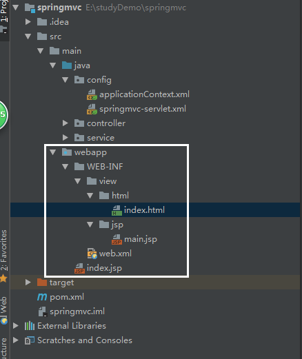

在以上搭建基础上，开始设置多视图解析器，此处以html和jsp视图为例（在原有项目基础上添加了html视图解析）
1.pom.xml新增依赖如下：
<dependency>
<groupId>org.springframework</groupId>
<artifactId>spring-context-support</artifactId>
<version>4.0.4.RELEASE</version>
</dependency>
<!-- 只添加上方依赖会报错少jar包，因此添加jar包如下 -->
<dependency>
<groupId>org.freemarker</groupId>
<artifactId>freemarker</artifactId>
<version>2.3.20</version>
</dependency>
此时，项目展示（视图）结构如下：

2.springmvc-servlet.xml中调整如下：
<?xml version="1.0" encoding="UTF-8"?>
<!-- 配置扫描的包 -->
<context:component-scan base-package="controller"/>
<!-- 注册HandlerMapper、HandlerAdapter两个映射类 -->
<mvc:annotation-driven/>
<!-- 访问静态资源 -->
<mvc:default-servlet-handler/>
<!-- 视图解析器 -->
<bean class="org.springframework.web.servlet.view.InternalResourceViewResolver">
<property name="prefix" value="/WEB-INF/view/jsp/"/>
<property name="suffix" value=".jsp"/>
<property name="order" value="1"/>
</bean>
<!-- html视图解析器 -->
<bean id="freemarkerConfig" class="org.springframework.web.servlet.view.freemarker.FreeMarkerConfigurer">
<property name="templateLoaderPath" value="/WEB-INF/view/html/" />
</bean>
<bean id="htmlviewResolver" class="org.springframework.web.servlet.view.freemarker.FreeMarkerViewResolver">
<property name="suffix" value=".html" />
<property name="order" value="0"/>
<property name="contentType" value="text/html;charset=UTF-8"/>
</bean>
</beans>
视图解析器根据order的值来确定执行顺序，值越小优先级越高，值得注意的是，jsp视图解析的order应为最大值，因为springmvc设置jsp视图解析总是最后执行。
3.测试：
package controller;
import org.springframework.beans.factory.annotation.Autowired;
import org.springframework.ui.Model;
import org.springframework.web.bind.annotation.RequestMapping;
import service.IService;
@org.springframework.stereotype.Controller
@RequestMapping("cc")
public class Controller {
@Autowired
IService service;
@RequestMapping("q")
public String qcc(Model model){
service.print();
return "main";
}
@RequestMapping("qcc")
public String cc(Model model){
service.print();
return "index";
}
}
当访问两个路由时，分别跳转到对应的界面。